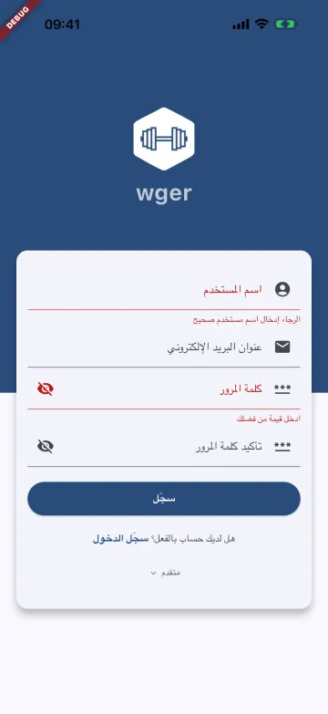
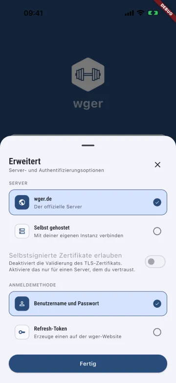
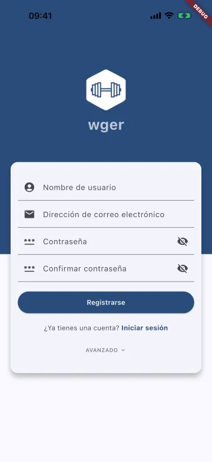
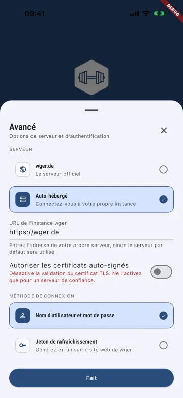
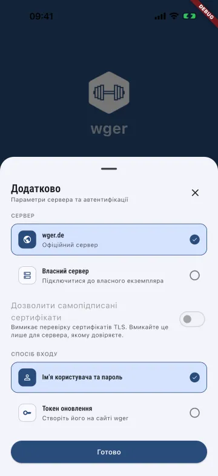
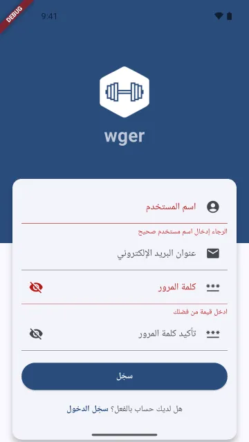
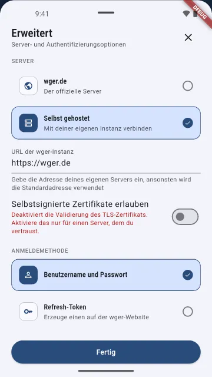
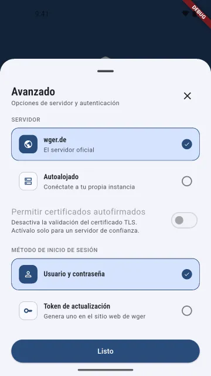
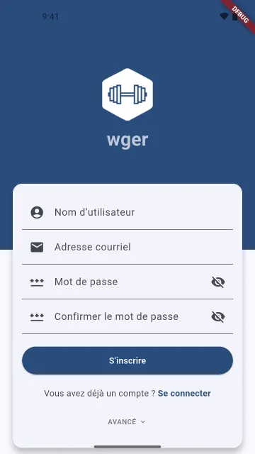
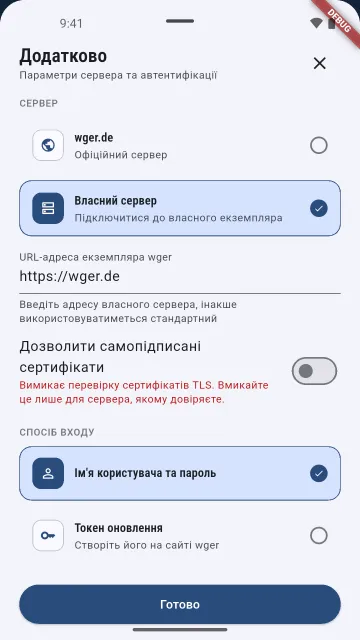

Real apps, real runs
Screenshots from four apps I ran shotfleet on, with what each run found, and at the end the store screenshots of two other apps of mine, which are not shotfleet output. The clips of each command are on See it work.
A real app: AnywhereRoles.
Unlike the store screenshots at the end of this page, these are real shotfleet output, only made smaller for the web. On 2026-10-06 I ran shotfleet 0.1.4 on AnywhereRoles, also my app: 120 Android screenshots (15 languages × 8 screens) on 1 emulator in 1826 s with 0 retries, and 108 iPhone screenshots (18 languages × 6 screens) on 2 iPhone 17 Pro Max simulators with iOS 26.4 in 3420 s. My Mac was heavily loaded and short of memory, so shotfleet used 2 simulators instead of 4, and ja, tr and zh-Hans each needed a second try. Check found 0 problems in both.
Before this run, check on the old Google Play screenshots I had made for it found 127 problems. 103 of them were translated captions over an app still in English: I had made one English capture and only translated the captions. Of the other 24, 15 were false “missing” lines from a bug in how 0.1.4 read fastlane supply’s file names (fixed in 0.1.6), and 9 were others. That was my mistake, and it’s why I recaptured every language. To be fair, writing and debugging the Android flow took me several failed runs before this one.


Another one: Kuokka.
Kuokka is my Hacker News reader. On 2026-10-07 I ran shotfleet 0.1.5 on it: 30 iPhone screenshots (6 languages × 5 screens) on 1 iPhone 17 Pro Max simulator with iOS 26.4, in three runs of two languages, 0 retries, 154 s, 132 s and 252 s. Check found 0 problems in all three (the check reads the pictures; it does not prove that every tap hit the right button). It was a debug build (2.0.14) from a branch I hadn’t released, not the App Store version, and the runs were the third go: my first flow tapped the wrong spots, my second failed on a tap point I wrote wrong (94.5%), and both logs are in the record.
The content is live Hacker News at the moment of capture. The feed and comment screens show real people’s usernames, comments and other companies’ logos, so I’m not putting them on this page. The six below are the Radar and Account screens, which have none. They are 6 of the 30, picked by me after looking at all of them.


On Android I ran shotfleet 0.1.6 on 2026-10-08, on a debug build of Kuokka 2.0.15 from main. That is a different build from the iPhone frames above, which are 2.0.14. It was 1 emulator and two runs of three languages, 5 screens each, 30 screenshots, 0 retries, 139 s and 126 s. Check found 0 problems in both runs. It worked with the APK and also with the app’s strings.xml file, and both gave 0 problems. Maestro 2.0.10 saves no screen hierarchy on Android, so check read the pictures by text recognition, which is weaker evidence. It still doesn’t prove that every tap hit the right button.
None of the 30 show live Hacker News content, because my flow never opens a story, and the flow turns the analytics question down in every language. The six below are 6 of the 30, picked by me after looking at all of them. Some oddities are the app’s own. The Settings screen has a tall blank band above its title and a few lines wrap with one word left over. The Search chips stay in English. Record: research/kuokka-android-run-2026-10-08/


And a third: WOD Tracker.
WOD Tracker is my own CrossFit-style workout timer and log app. On 2026-10-07 I captured it with shotfleet 0.1.6 from a debug build of version 1.6.7, which was in store review at the time, so this is not the store version. iPhone: three runs of two languages (hi and tr, zh-Hans and pl, nl and pt), 4 screens each, 24 screenshots on 1 iPhone 17 Pro Max simulator with iOS 26.4, 0 retries, 366 s, 400 s and 384 s. Android: two runs of three languages (hi, tr and zh-CN, then pl, nl and pt), 6 screens each, 36 screenshots on 1 emulator, 0 retries, 553 s and 528 s. Check found 0 problems in all five runs (the check reads the pictures; it does not prove that every tap hit the right button). On iPhone it also had the app’s view hierarchy to read; Maestro 2.0.10 saves none on Android, so there check read the pictures by text recognition, which is weaker evidence.
In setting up the run, one iPhone attempt came out green (exit 0, 8 of 8 screenshots) but its Hindi Benchmarks frame showed the Train screen, because my tap landed on the tab bar. Check said 0 problems, since that is a valid screen. I caught it by looking at each frame, and those frames are not on this page; the run was repeated. The Android frames show demo data that the app’s debug link seeds, no account; the iPhone frames show the app empty, with no paywall because this build has no store keys. The English that stays is the app’s own content (format names, benchmark names). These twelve are 12 of the 60 captured in the runs that count, picked by me after looking at all of them. Record: research/wod-tracker-run-2026-10-07/


And a fourth: wger, an open-source app.
wger is an open-source workout app made with Flutter (wger-project/flutter). It isn’t my app. On 2026-10-08 I built it myself from the tag 2.1.1, as a debug build, and captured it with shotfleet 0.1.6. I used the tag because the latest commit wouldn’t build on Android that day (the maintainer has since pushed the fix). shotfleet read the app’s own translation files (.arb). I only took the screens you can reach without an account, which means the login screen and the few sheets and forms around it. I never logged in, and the red DEBUG banner shows on every frame.
On iPhone I did three runs of two languages (ar and de, then es and fr, then hr and uk), 6 screens each, so 36 screenshots on 1 iPhone 17 Pro Max simulator with iOS 26.4. They took 136, 144 and 129 seconds, with 0 retries. On Android I did two runs of three languages (ar, de and es, then fr, hr and uk), also 36 screenshots, on 1 emulator, in 177 and 204 seconds, with 0 retries. Check found 0 problems in all five runs. Check reads the screens; it doesn’t prove that every tap hit the right button. On iPhone it read the app’s view hierarchy. Maestro 2.0.10 saves none on Android, so there it read the pictures by text recognition, which is weaker.
In one failed iPhone attempt, frame 01 was the app’s splash screen, even though the screen list already said Log in. I think check would have passed it, since on iPhone it reads that list. I only saw it by looking, and I added a wait before the first shot. These twelve are 12 of the 72 frames from the runs that count, picked by me after looking at all of them. The app has some odd translations of its own. Record: research/wger-run-2026-10-08/










wger, the open-source workout app, is licensed under the AGPL-3.0-or-later with an app-store exception: github.com/wger-project/flutter. These are screenshots of the open-source wger app, captured by me with shotfleet from a debug build I compiled myself (version 2.1.1). The project isn’t affiliated with shotfleet and doesn’t endorse it. The only logo is the one the app draws itself.
What my other apps look like in five languages.
Besides AnywhereRoles further down, I have two other apps in the stores. These are their real store screenshots, not shotfleet output: one screen in five languages. I’m showing them for what localized store screenshots look like, not what shotfleet can do.